Construction: canonical action sequences merge by common prefix and structurally identical suffix. Branch labels name the kinds taking each branch. This models shared doing under canonical action names; the automata do not literally share states. For graphs with loops, the construction uses simple accepting paths and does not unfold repeated traversals.
1.change_decimal_place_name_without_regrouping
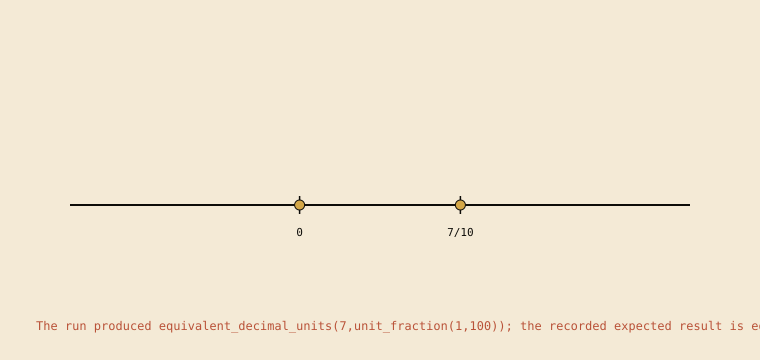
The run produced equivalent_decimal_units(7,unit_fraction(1,100)); the recorded expected result is equivalent_decimal_units(70,unit_fraction(1,100)). The scene is derived from the contract run (4 trace steps).
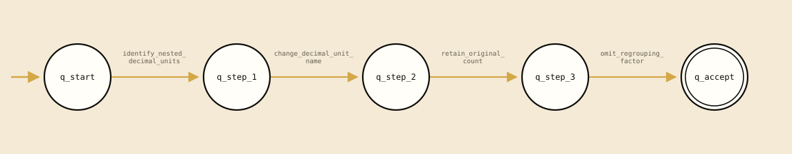
Recorded transition graph; local action names remain on the edges.
Computed structure:linear_trace. no recorded branch or loop; the table records one accepting run. 5 states, 4 distinct actions, 0 branching states, 0 loop edges; 4 static rows and 4 observed rows.
2.decimal_add_unaligned_numerals
The run produced decimal(2,fractional_digits(8,1),tenths); the recorded expected result is decimal(2,fractional_digits(8,1),tenths). The scene is derived from the contract run (6 trace steps).
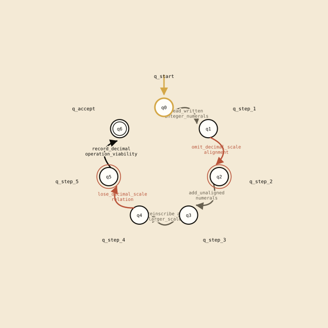
Recorded transition graph; local action names remain on the edges.
Computed structure:linear_trace. no recorded branch or loop; the table records one accepting run. 7 states, 6 distinct actions, 0 branching states, 0 loop edges; 6 static rows and 12 observed rows.
3.decimal_addition_by_aligned_units
The run produced decimal(2,fractional_digits(8,1),tenths). The scene is derived from the contract run (6 trace steps).
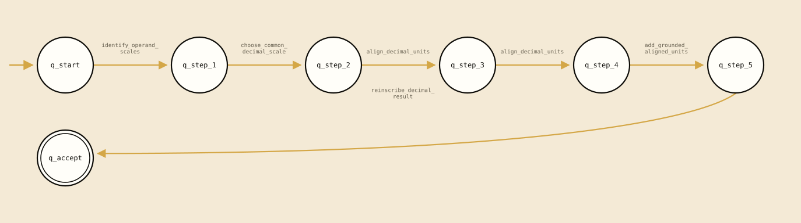
Recorded transition graph; local action names remain on the edges.
Computed structure:linear_trace. no recorded branch or loop; the table records one accepting run. 7 states, 5 distinct actions, 0 branching states, 0 loop edges; 6 static rows and 12 observed rows.
4.decimal_comparison_by_aligned_units
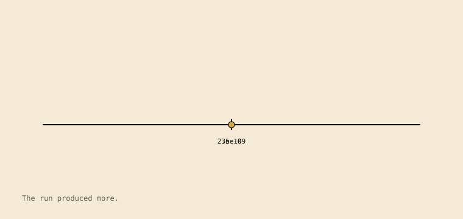
The run produced more. The scene is derived from the contract run (5 trace steps).
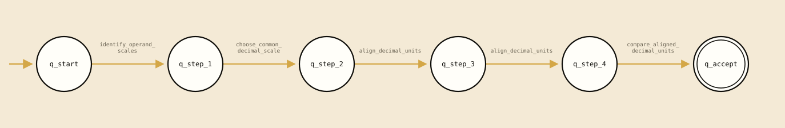
Recorded transition graph; local action names remain on the edges.
Computed structure:linear_trace. no recorded branch or loop; the table records one accepting run. 6 states, 4 distinct actions, 0 branching states, 0 loop edges; 5 static rows and 10 observed rows.
5.decimal_fraction_place_value_comparison
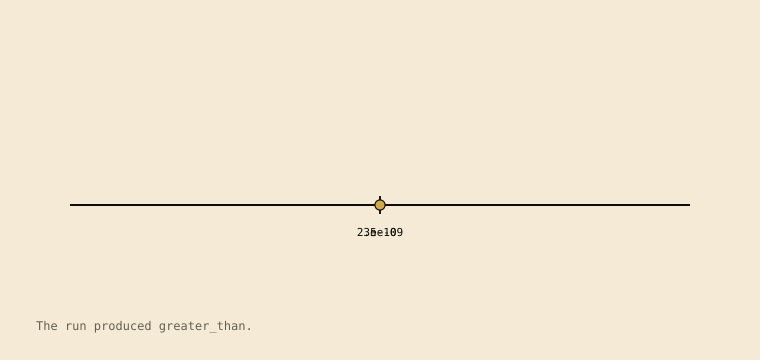
The run produced greater_than. The scene is derived from the contract run (7 trace steps).
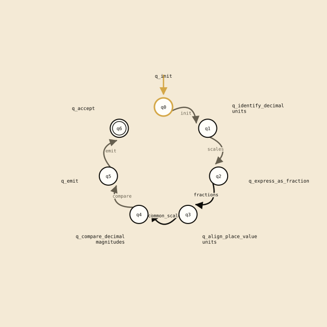
Recorded transition graph; local action names remain on the edges.
Computed structure:linear_trace. no recorded branch or loop; the table records one accepting run. 7 states, 6 distinct actions, 0 branching states, 0 loop edges; 6 static rows and 12 observed rows.
6.decimal_multiplication_rule
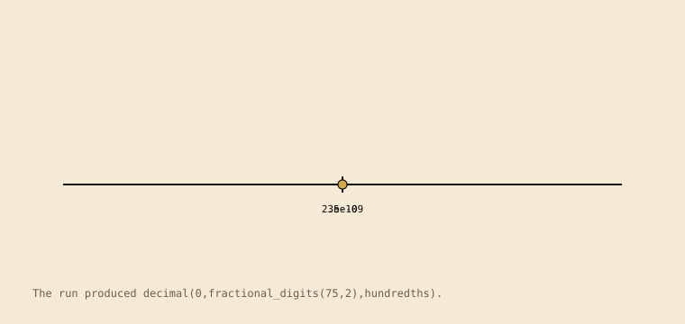
The run produced decimal(0,fractional_digits(75,2),hundredths). The scene is derived from the contract run (6 trace steps).
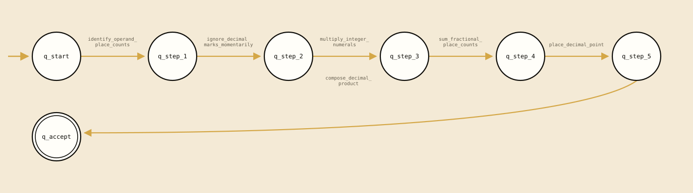
Recorded transition graph; local action names remain on the edges.
Computed structure:linear_trace. no recorded branch or loop; the table records one accepting run. 7 states, 6 distinct actions, 0 branching states, 0 loop edges; 6 static rows and 12 observed rows.
Computed structure:linear_trace. no recorded branch or loop; the table records one accepting run. 6 states, 5 distinct actions, 0 branching states, 0 loop edges; 5 static rows and 10 observed rows.
8.decimal_place_unit_regrouping
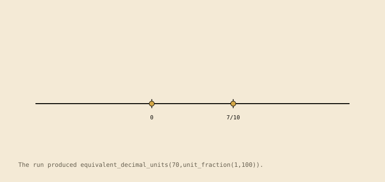
The run produced equivalent_decimal_units(70,unit_fraction(1,100)). The scene is derived from the contract run (4 trace steps).
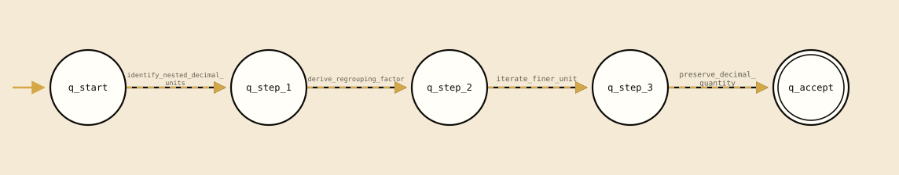
Recorded transition graph; local action names remain on the edges.
Computed structure:linear_trace. no recorded branch or loop; the table records one accepting run. 5 states, 4 distinct actions, 0 branching states, 0 loop edges; 4 static rows and 4 observed rows.
9.decimal_point_rule_misapplication
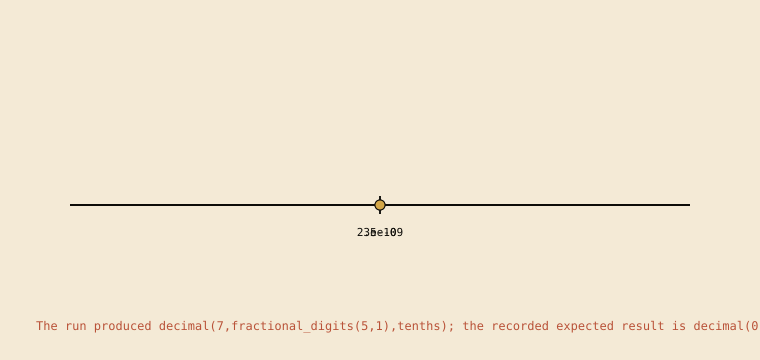
The run produced decimal(7,fractional_digits(5,1),tenths); the recorded expected result is decimal(0,fractional_digits(75,2),hundredths). The scene is derived from the contract run (5 trace steps).
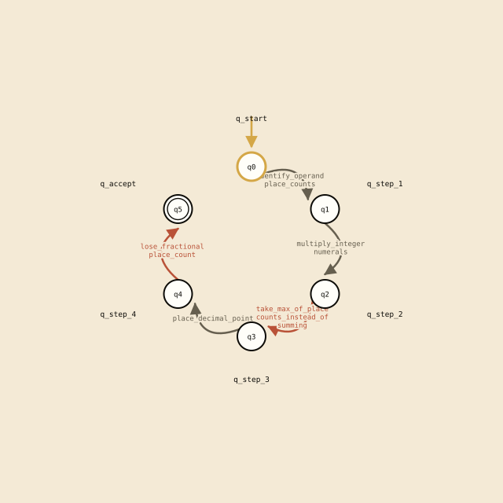
Recorded transition graph; local action names remain on the edges.
Computed structure:linear_trace. no recorded branch or loop; the table records one accepting run. 6 states, 5 distinct actions, 0 branching states, 0 loop edges; 5 static rows and 10 observed rows.
10.decimal_scale_loss_comparison
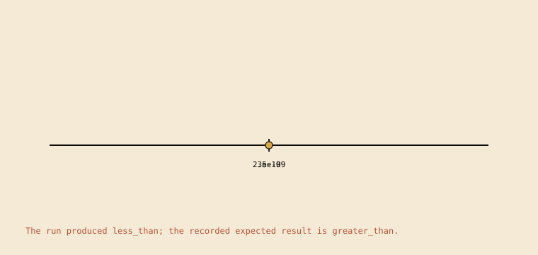
The run produced less_than; the recorded expected result is greater_than. The scene is derived from the contract run (8 trace steps).
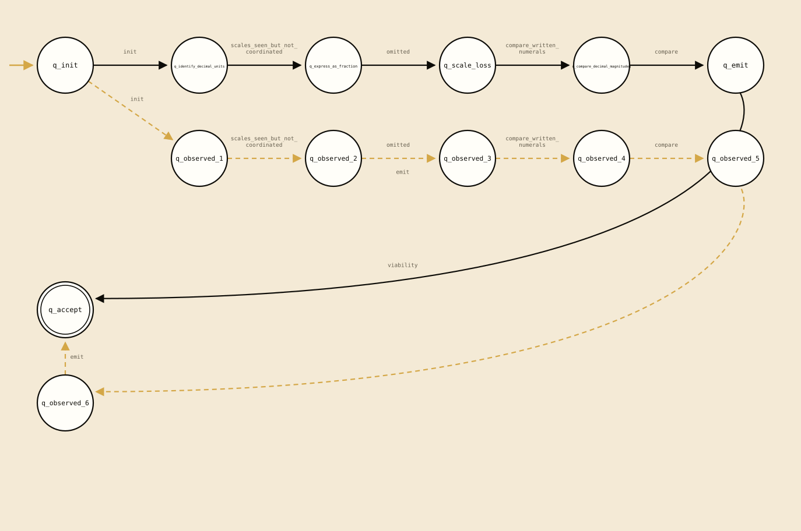
Recorded transition graph; local action names remain on the edges.
Computed structure:branching. one or more recorded states have multiple outgoing transitions; no loop edge is recorded. 13 states, 7 distinct actions, 1 branching states, 0 loop edges; 6 static rows and 14 observed rows.
11.decimal_subtract_unaligned_numerals
The run produced decimal(2,fractional_digits(2,1),tenths); the recorded expected result is decimal(2,fractional_digits(2,1),tenths). The scene is derived from the contract run (6 trace steps).
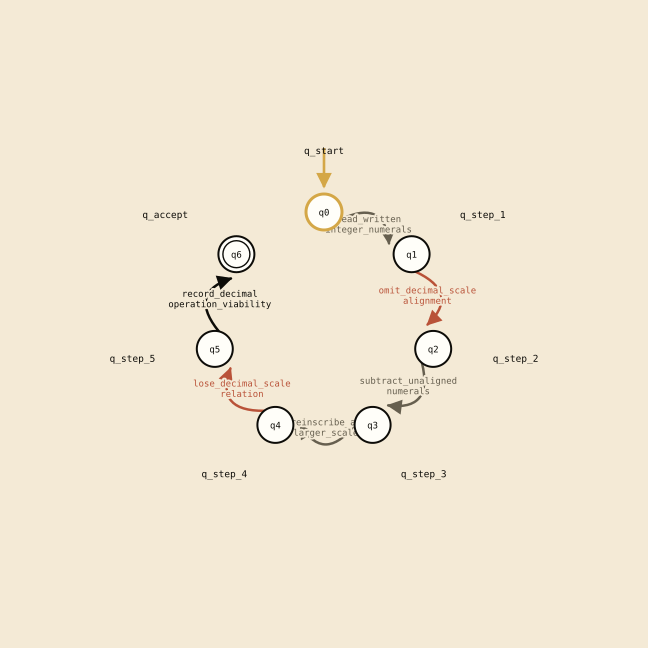
Recorded transition graph; local action names remain on the edges.
Computed structure:linear_trace. no recorded branch or loop; the table records one accepting run. 7 states, 6 distinct actions, 0 branching states, 0 loop edges; 6 static rows and 12 observed rows.
12.decimal_subtraction_by_aligned_units
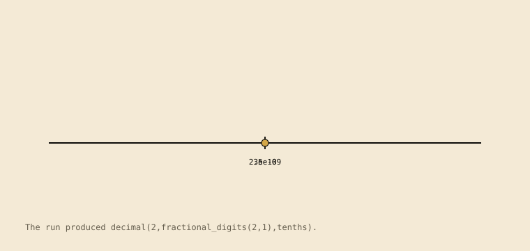
The run produced decimal(2,fractional_digits(2,1),tenths). The scene is derived from the contract run (6 trace steps).
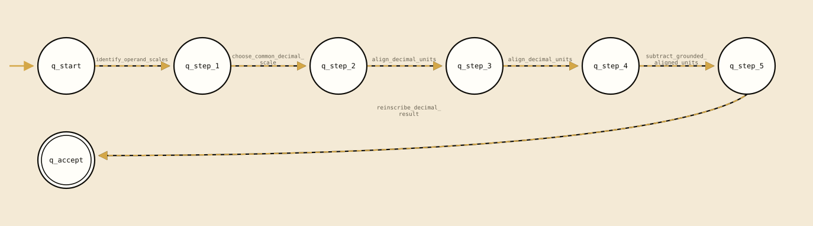
Recorded transition graph; local action names remain on the edges.
Computed structure:linear_trace. no recorded branch or loop; the table records one accepting run. 7 states, 5 distinct actions, 0 branching states, 0 loop edges; 6 static rows and 12 observed rows.
13.decimal_whole_number_reading
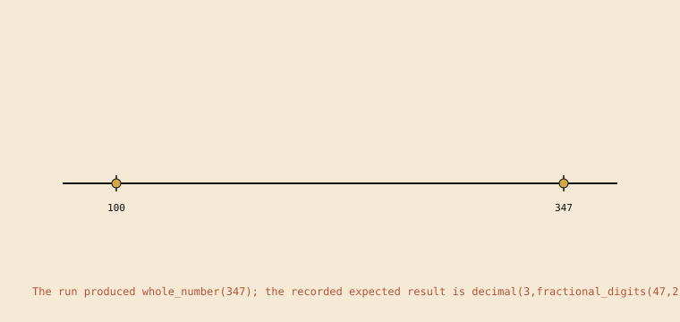
The run produced whole_number(347); the recorded expected result is decimal(3,fractional_digits(47,2),hundredths). The scene is derived from the contract run (5 trace steps).
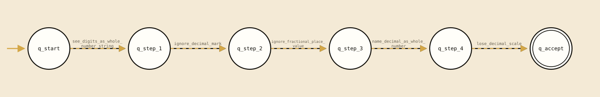
Recorded transition graph; local action names remain on the edges.
decimal_action_pairs.pl:97 observed on {"a": 347, "b": 100} observed on {"a": 348, "b": 100} (derived template)
q_step_1
ignore_decimal_mark
q_step_2
decimal_action_pairs.pl:97 observed on {"a": 347, "b": 100} observed on {"a": 348, "b": 100} (derived template)
q_step_2
ignore_fractional_place_value
q_step_3
decimal_action_pairs.pl:97 observed on {"a": 347, "b": 100} observed on {"a": 348, "b": 100} (derived template)
q_step_3
name_decimal_as_whole_number
q_step_4
decimal_action_pairs.pl:97 observed on {"a": 347, "b": 100} observed on {"a": 348, "b": 100} (derived template)
q_step_4
lose_decimal_scale
q_accept
decimal_action_pairs.pl:97 observed on {"a": 347, "b": 100} observed on {"a": 348, "b": 100} (derived template)
Computed structure:linear_trace. no recorded branch or loop; the table records one accepting run. 6 states, 5 distinct actions, 0 branching states, 0 loop edges; 5 static rows and 10 observed rows.
14.ecuadorian_decimal_long_division
The run produced decimal_quotient(3,0). The scene is derived from the contract run (6 trace steps).
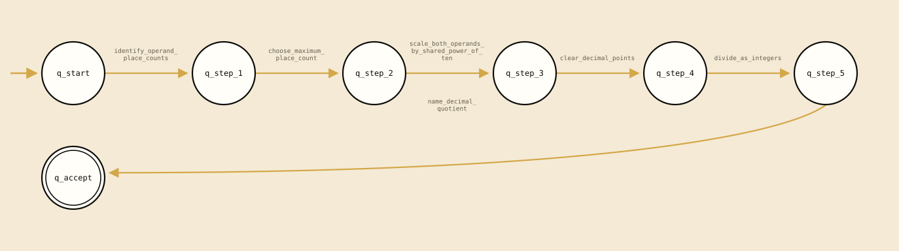
Recorded transition graph; local action names remain on the edges.
Computed structure:linear_trace. no recorded branch or loop; the table records one accepting run. 7 states, 6 distinct actions, 0 branching states, 0 loop edges; 6 static rows and 6 observed rows.
15.positional_decimal_reading
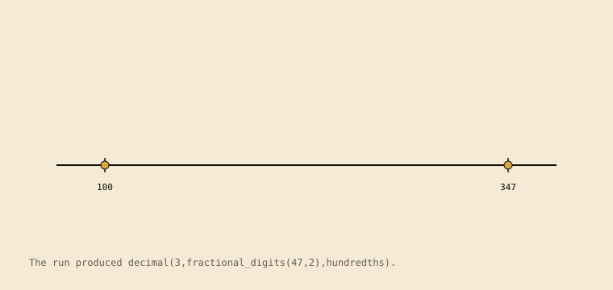
The run produced decimal(3,fractional_digits(47,2),hundredths). The scene is derived from the contract run (4 trace steps).
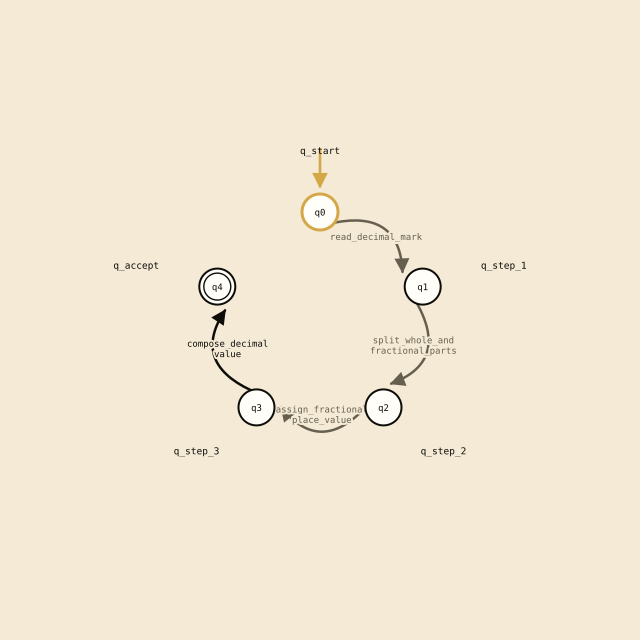
Recorded transition graph; local action names remain on the edges.
decimal_action_pairs.pl:77 observed on {"a": 347, "b": 100} observed on {"a": 348, "b": 100} (derived template)
q_step_1
split_whole_and_fractional_parts
q_step_2
decimal_action_pairs.pl:77 observed on {"a": 347, "b": 100} observed on {"a": 348, "b": 100} (derived template)
q_step_2
assign_fractional_place_value
q_step_3
decimal_action_pairs.pl:77 observed on {"a": 347, "b": 100} observed on {"a": 348, "b": 100} (derived template)
q_step_3
compose_decimal_value
q_accept
decimal_action_pairs.pl:77 observed on {"a": 347, "b": 100} observed on {"a": 348, "b": 100} (derived template)
Computed structure:linear_trace. no recorded branch or loop; the table records one accepting run. 5 states, 4 distinct actions, 0 branching states, 0 loop edges; 4 static rows and 8 observed rows.
16.recalled_result_scaling
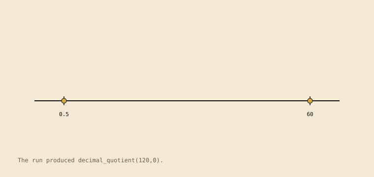
The run produced decimal_quotient(120,0). The scene is derived from the contract run (4 trace steps).
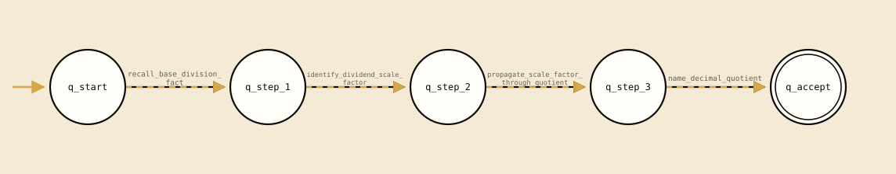
Recorded transition graph; local action names remain on the edges.
Computed structure:linear_trace. no recorded branch or loop; the table records one accepting run. 5 states, 4 distinct actions, 0 branching states, 0 loop edges; 4 static rows and 4 observed rows.